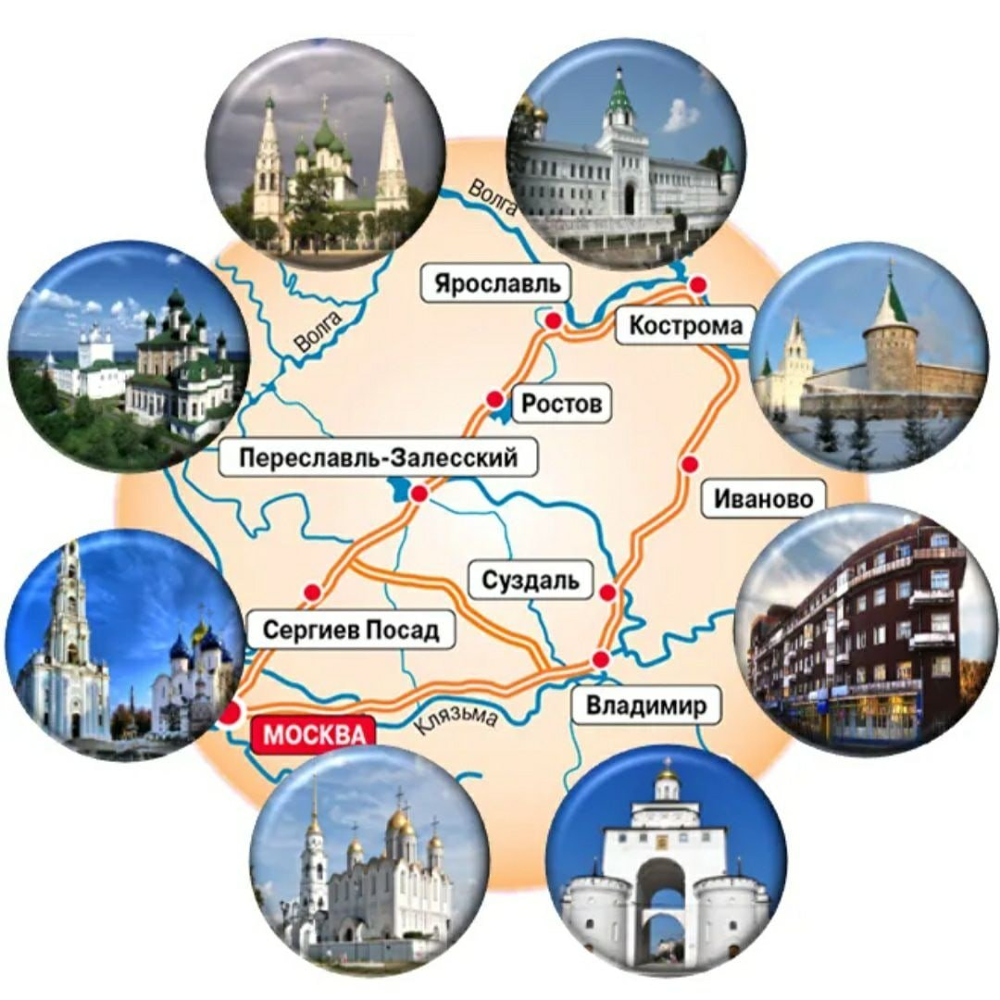

Этот маршрут много лет является одним из самых привлекательных не только для иностранцев, решивших посетить эту огромную страну, но и для россиян, желающих ближе познакомиться с историей и культурой своей родины. Какие города входят в Золотое кольцо России? Откуда взялся этот термин? Каковы его главные достопримечательности?
Автором данного термина 50 лет назад стал советский журналист Юрий Бычков. Однажды он решил побывать в тех городах России, в которых, как он посчитал, сохранились самые значимые достопримечательности страны, как культурные, так и исторические. Начался путь журналиста из Москвы в Загорск, который ныне зовется Сергиевым Посадом, продолжился в Переславле-Залесском, затем в Ростове Великом, Ярославле, Костроме, Иваново и Суздале. А последним пунктом маршрута перед возвращением в Москву стал город Владимир. Возвратившись домой, Бычков создал серию очерков об этих местах с богатейшим культурно-историческим наследием, опубликованную в 1967 году, которой он дал название «Золотое кольцо». Так он назвал свой маршрут неспроста: если соединить эти города линиями на карте, то выйдет цельная петля, напоминающая кольцо. Очерки Бычкова привлекли к себе внимание властей, которые воспользовались опытом журналиста и проложили по описанным городам туристический маршрут, присвоив ему это меткое название. И, надо сказать, идея оказалась очень успешной: путевку на тур в Золотое кольцо в те годы было очень непросто достать – таким популярным оказался этот кольцевой маршрут и среди советских граждан, и среди иностранных туристов. В итоге в общей сложности на данный момент в Золотое кольцо России входит следующие 8 городов.
Добраться до Сергиева Посада из Москвы можно всего за полтора часа, а чтобы осмотреть главные достопримечательности, одного дня хватит с головой: город большим назвать нельзя, население в нем составляет чуть более ста тысяч человек, но в XV веке именно он являлся культурным и политическим центром Московского государства. Посмотреть здесь обязательно нужно на Троице-Сергиеву Лавру, вокруг которой и строился впоследствии сам городок. Связана она со многими историческими личностями: основал ее Сергий Радонежский, крещен в ней был Иван Грозный, а также она служила пристанищем для Петра I, скрывавшегося в монастыре во время Стрелецкого бунта. Помимо лавры, интересно будет посмотреть на расположенную напротив нее Красногорскую площадь с колоритными торговыми рядами, оформленными в «русском» стиле, а также посетить Музей игрушки.